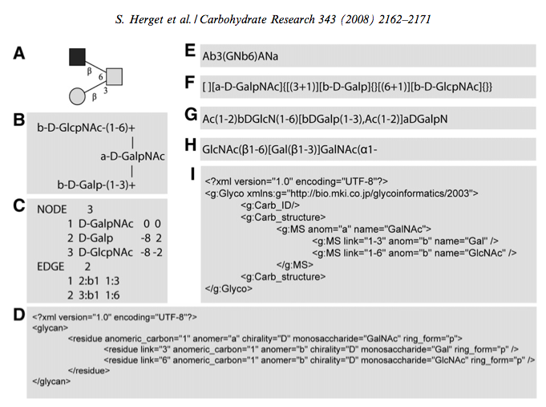

There are many formats for specifying a polysaccharides as seen in this diagram from Herget et al. 2008.

The article introduces a format known as GlycoCT.
A common and compact molecule specification format is known as SMILES (ref) which stands for. It relies on the specification of the elements and the bonds (both implicit and explicit) of a molecule. Branches and rings can also be specified.
Because protein crystallographers are conversant with the concept of residues and polysaccharides are polymers of various carbohydrate units, the step to equating an element to a sugar residue and a chemical bond to a glycosidic link is easy. Polysaccharides are simpler because there are no polymeric rings (only rings within the residue unit). However, the linking is more complicated. Firstly, there are more types of links compared to the basic three in molecules (single, double, triple). Secondly, the type of the link relies on the attaching carbohydrate (α, β).
Conceptually, it is easiest to think of one sugar unit linking to the rest of the polysaccharide. For instance, this is the portion that attached to the protein. So, the most common polysaccharide attached to a protein is an N-linked chain that has three units in a linear chain linked to an ASN. The three-letter code for each of the units in order is NAG, NAG, MAN [1]. It is not a leap to imagine that this could be represented using:
NAG-NAG-MAN [2]
As with SMILES, there is a default link. In SMILES, it's a single bound while in SCaLES the default is β(1-4). This linkage means that the attaching unit is connecting its anomeric carbon (C1) to the forth carbon (C4) on the other unit. It also specifies that the attaching unit is a β-isomer. In the example, MAN is a mannose saccharide but it is the α-isomer so it should:
NAG-NAG-BMA
However, the SCaLES parser automatically detects that the final residue is the incorrect isomer and changes the code from MAN to BMA: The linkage takes precedence. The specify an alternative to the default linkage, it can be indicated thus:
NAG-NAG-a-(1-4)-MAN
The hand of the linkage can be specified with "a" or "alpha" and the carbon atoms being linked can be specified using "(1-4)" or "(1,4)".
Branching is specified using square brackets (compared to parenthesises in SMILES) thus:
NAG-[a-(1-6)-FUC]-NAG-BMA
The branching can contain more than one saccharide:
NAG-NAG-BMA-[a-(1-3)-MAN-a-(1-2)-MAN-a-(1-2)-MAN]-a-(1-6)-MAN-[a-(1-3)-MAN-a-(1-2)-MAN]-a-(1-6)-MAN-a-(1-2)-MAN
| [1] | This is not exactly true so read on for pedagogical purposes. |
| [2] | This links to an image of the polysaccharide generated in Carbohydrate Builder in REEL. For more details on the builder and the image see here. |
Weininger, David (February 1988). "SMILES, a chemical language and information system. 1. Introduction to methodology and encoding rules". Journal of Chemical Information and Modeling 28 (1): 31–6. doi:10.1021/ci00057a005.
{kind=link}
{kind=link}
{kind=link}
![NAG-[a-(1-6)-FUC]-NAG-BMA](../images/scales_carbo4.png){kind=link}
![NAG-NAG-BMA-[a-(1-3)-MAN-a-(1-2)-MAN-a-(1-2)-MAN]-a-(1-6)-MAN-[a-(1-3)-MAN-a-(1-2)-MAN]-a-(1-6)-MAN-a-(1-2)-MAN](../images/scales_carbo5.png){kind=link}